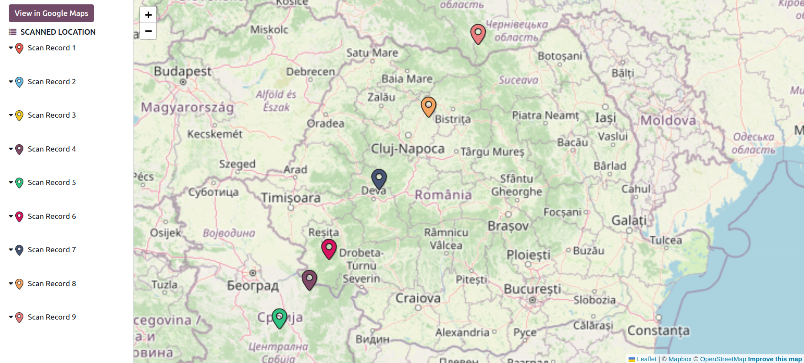
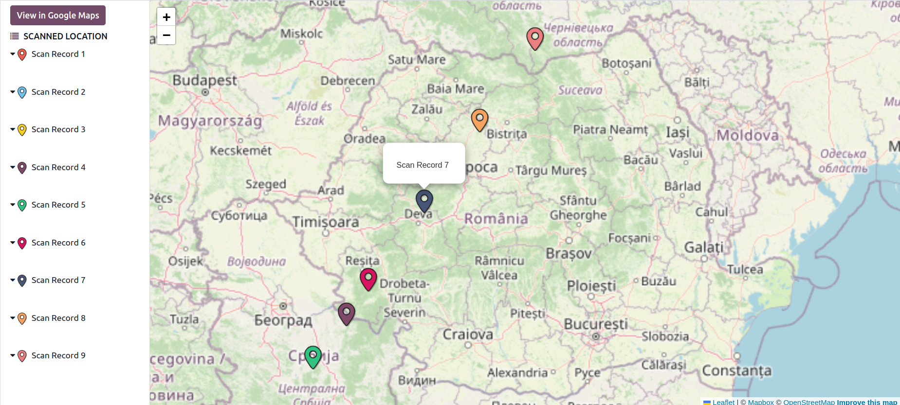
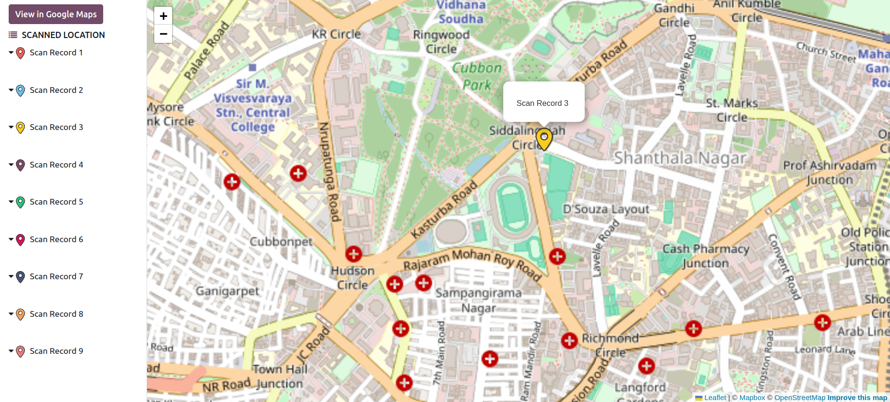

01
Gain insights into how Leaflet View integrates seamlessly into Odoo 17, offering a comprehensive
map-based interface for better visualization of data.
.

02
Interact with map markers to display detailed information about records, making data analysis easier and
more intuitive.

03
Navigate through street views directly from the map, enabling location-based exploration and enhanced
user experience.
